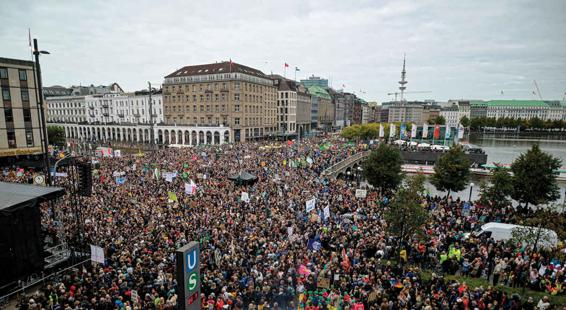

Given the scientific consensus that global warming and climate change require urgent attention if we are to avoid a “climate emergency” in the future, some steps have been taken to address its primary cause: greenhouse gas emissions. Governments, businesses, and ordinary citizens have all gotten in on the action. Are the actions that are currently being taken sufficient?
The Politics of Climate Change: National Action to Stop Global Warming
The Paris Agreement, as we have seen, has thus far failed to get countries to comply with the necessary greenhouse gas reductions that would limit post-industrial global warming to 1.5 degrees Celsius, or even 2.0 degrees. It was further weakened in 2017, when President Trump announced that the United States would no longer honor it. Following nearly two years of negotiations, formal withdrawal was announced in November 2019, to become effective late 2020. The United States’ official reasons for withdrawal, as stated by Secretary of State Mike Pompeo, were that compliance with the Paris Agreement would hamper economic growth, and that the United States’ current approach “incorporates the reality of the global energy mix and uses all energy sources and technologies cleanly and efficiently, including fossils fuels, nuclear energy, and renewable energy” (quoted in Friedman, 2019). U.S. withdrawal also reflected the official climate skepticism of the Trump administration, including that of President Trump himself, who on numerous occasions had either described climate change as a “hoax,” or had argued that climates always change, while denying the scientific consensus that current changes are human-caused (Schulman, 2019).
The United States’ withdrawal was unique, since by the time of the announcement every other country had signed on. Although newly elected members of Congress in 2016 called for a “green new deal,” as of early 2020 it remains to be seen whether current U.S. climate policies will change, or whether China and the other world signatories will eventually take leadership and significantly reduce their dependency on fossil fuels. China currently accounts for 29 percent of the world’s human-made carbon emissions, although it is now investing heavily in green technology. According to a recent report by the International Renewable Energy Agency, in 2017 China accounted for nearly half of all global expenditures on renewable energy investment, leading to the conclusion that “no country has put itself in a better position to become the world’s renewable energy superpower than China” (IRENA, 2019). China’s president, Xi Jinping, has called on China to play a leadership role in clean-energy investment and addressing the issue of climate change, even as the United States appears to be retreating from such a leadership position (Associated Press, 2018).
Yet even if all other countries meet their Paris Agreement commitments to reduce greenhouse gases, and the United States reverses its decision to formally pull out in late 2020, will these actions be sufficient to halt global warming? The UN Environmental Programme’s 2019 Emissions Gap Report was not hopeful, noting that despite the Paris Agreement, greenhouse gas emissions continued to rise, with the world’s 20 wealthiest economies accounting for four-fifths of the total. The largest emitters, according to the report, remained the United States and China. Unless drastic actions were taken, the report predicted, global temperatures were on pace to rise by as much as 3.9 degrees Celsius (7 degrees Fahrenheit) by 2100. In order to achieve the optimal Paris goal of a 1.5 degrees Celsius increase, global emissions would have to decline by 7.6 percent a year over the next decade. “The size of these annual cuts may seem shocking,” the report concluded, “particularly for 1.5°C. They may also seem impossible, at least for next year. But we have to try” (UNEP, 2019).
Sustainable Development
Stopping—or even slowing—the environmental effects of climate change will therefore require significant actions on the part of individuals as well as nations. If the impoverished nations of the world are to catch up with the richer ones, a new path to development is needed. Such a path must couple scarce resource conservation with the reduction of greenhouse gases and other pollutants. This path has been called sustainable development, a term that was first used in a report by the World Commission on Environment and Development (1987), popularly known as the Brundtland Report, after former Norwegian prime minister Gro Harlem Brundtland, who chaired the commission. The report defined sustainable development simply as “development that meets the needs of the present without compromising the ability of future generations to meet their own needs.” This definition sought to reconcile two seemingly intractably opposed communities: environmentalists, who were often seen as anti-growth, and business people, who were often seen as anti-environment. Environmentalists could now argue that, at least in wealthy industrial nations, environmentally harmful economic development should be limited, while conceding that economic growth might be necessary to lift people out of poverty in the global south.
The notion of sustainable development, while popular, remains unclear: What are the needs of the present? How much development can occur without compromising the future, particularly since we don’t know what the future effects of technological change may be (Giddens, 2009)? However imprecise the term, “sustainable development” is generally taken to mean that growth should, at least minimally, be carried on in such a way as to preserve and recycle physical resources rather than deplete them, to maintain biodiversity, and to keep pollution to a minimum by protecting clean air, water, and land. Stated most simply, sustainable development means that today’s business and political leaders should leave our planet’s future in good health for their children and grandchildren.
One way sustainable development is to be achieved is by switching from a carbon-based economy to one based on renewable energy that emits fewer greenhouse gases. This involves moving from coal, petroleum, and gas to clean technologies (so-called “greentech”), such as solar and wind power, the use of biofuels, more fuel-efficient transportation, advanced storage batteries, and hi-tech power grids. As the cost of greentech has come down, global greentech investments have gone up, with $332 billion invested in clean energy in 2018. China, as noted previously, is the largest investor in greentech, followed by Europe and the United States (Bloomberg, 2019). While $332 billion may seem like a large investment, by way of comparison, total global investment in conventional, nonrenewable energy was four times as great in 2018 ($1.5 trillion) (International Energy Agency, 2019). In that year the world’s governments provided roughly the same amount in tax breaks and other forms of subsidies in support of oil extraction as was being invested in clean energy (Meyer, 2018).
There was initially some hopeful evidence that economies could grow sustainably without producing increased greenhouse gases. Even though global GDP grew by 3 percent during the two-year period of 2014–2015, carbon emissions remained flat (International Energy Agency, 2016). But according to the World Meteorological Association, between 2015 and 2019 carbon dioxide emissions actually increased, resulting in an accelerated increase in the atmospheric concentration of major greenhouse gases (WMO, 2019). One detailed study of leading fossil fuel–producing countries found that rather than curbing fossil fuel production as sought by the Paris Agreement, “governments are planning to produce about 50 percent more fossil fuels by 2030 than would be consistent with a 2°C pathway and 120 percent more than would be consistent with a 1.5°C pathway” (SEI et al., 2019). So far, the efforts of the world’s leading economies to meet Paris goals and stop (or even slow) global warming have not been encouraging.
A case can be made that nuclear energy is a clean alternative to petroleum, since nuclear plants do not emit greenhouse gases. Although widely used in Europe—more than a quarter of Europe’s energy comes from nuclear power plants—nuclear energy also has a number of potential drawbacks. One problem is the possibility of a nuclear plant accident that releases deadly radiation, such as the one that occurred in Chernobyl, Ukraine, in 1986, exposing more than 6 million people and requiring the resettlement of some 300,000. There are also problems with disposing of radioactive waste from spent nuclear fuel, which remains highly toxic for thousands of years. There is the danger that nuclear fuel could be stolen and used to make nuclear weapons. Even unrelated natural disasters can create serious safety concerns: It is estimated that a fifth of the world’s 460 reactors are in areas vulnerable to earthquakes, while a quarter are located on coastlines where flooding—increasingly likely with sea level rise—is a danger (World Nuclear Association, 2019; Vidal, 2018). In 2011, a 9.0 magnitude earthquake and resulting tsunami caused three nuclear reactors to experience meltdown at the Fukushima Daiichi nuclear power plant in Japan, requiring the evacuation of some 63,000 people; seven years later, less than half had returned home (Harding, 2018). As a result of the Japan disaster, several European countries planned to phase out nuclear power. Germany, for example, took the dramatic step of pledging to shutter its nuclear reactors by 2022, although it is not clear that goal will be reached on time (Huggler, 2019).
Environmental Social Movements
Individual actions, such as recycling or buying sustainable products, are important steps that signal a personal commitment to make a difference. But such actions, by themselves, are unlikely to have a significant effect on global warming. To be truly effective, individual actions have to be mobilized into large-scale social movements, which we defined (in Chapter 13) as “collective attempts to further a common interest or secure a common goal through action outside the sphere of established institutions.”
Table 19.1APPLYING SOCIOLOGY TO POPULATION, URBANIZATION, AND THE ENVIRONMENT
CONCEPT
APPROACH TO UNDERSTANDING POPULATION, URBANIZATION, AND THE ENVIRONMENT
CONTEMPORARY APPLICATION
Second Demographic Transition
In a few industrial economies, birth rates have become lower than death rates, as families choose to have fewer children. This results in an aging population, along with population decline.
Greece, Japan, Italy, and Portugal have all lost population from natural increase—a fate that may await other countries as they become wealthier.
The New Ecological Paradigm
An increasingly influential way of thinking, emerging in the 1970s, that emphasizes the complex human and natural interactions involved in global ecosystems, and recognizing that the biophysical environment is not limitless.
Environmental sociology—a branch of sociology that examines the relationships between social systems and the ecosphere, studying such areas as the origins and impacts of technology, the relationship between social change and environmental change, and the role of social inequality and power relationships in shaping human interactions with the environment.
Anthropocene
A term meaning “human epoch” used to denote the current geological period, in which many geologically significant conditions and processes are profoundly altered by human activities.
Understanding the role of carbon emissions and the greenhouse effect; global warming and climate change; and the need for concerted international action to avoid increasingly catastrophic climate emergencies.
Food Security
People’s access to sufficient, safe, and nutritious food that meets the need for an active and healthy life.
Global warming, climate change, and drought threaten food security for a significant portion of the world population; even today, more than 800 million people are undernourished.
Environmental Injustice
Damaged ecosystems are closely linked to the harms experienced by the most marginalized human beings across the planet. Pollution, climate change, and other ecological challenges do the most damage to the world’s poorest people.
Deforestation in the Amazon further impoverishes the indigenous peoples who live there and depend on the forests; the most toxic industries are found in the poorest communities and nations.
Sustainable Development
Economic development that meets the needs of the present without compromising the ability of future generations to meet their own needs.
Switching from carbon-based economy to renewable energy; balancing economic development with ecological considerations; studying social movements in support of sustainable development.
There is evidence that a social movement may be emerging around climate change. During the September 2019 “Global Week for the Future” (also called the Climate Strike), an estimated 4 million people took to the streets in 150 countries around the world to demand that their governments take action to halt global warming. Massive peaceful demonstrations, drawing hundreds of thousands of participants, many of whom were school age, occurred in major metropolitan areas such as New York City, London, Berlin, Melbourne, Manila, Nairobi, and Rio de Janeiro, as well as towns on every continent (even scientists in Antarctica joined in). The demonstrations were timed to coincide with the United Nations Climate Action Summit, which brought world leaders together to address climate change (Sengupta, 2019).
The global demonstrations were the direct result of actions a year earlier by a 15-year-old Swedish schoolgirl. In August 2018, Greta Thunberg stopped going to school, deciding it was more important to protest Swedish government inaction on the climate crisis. So instead of attending classes, Thunberg protested outside of the Swedish Parliament, holding a sign that read “Skolstrejk för klimatet” (“school strike for the climate”). Her ideas quickly caught on, creating an international movement of school students who were willing to miss classes to protest government inaction on climate change, even if it meant being disciplined for absenteeism. Thunberg became a global symbol of the urgency felt by a growing number of high school and college students, who had come to the conclusion that they would be paying the price for their parents’ generation’s inaction on climate change. When she addressed the UN Summit, Thunberg pulled no punches:
This is all wrong. I shouldn’t be up here. I should be back in school on the other side of the ocean. Yet you all come to us young people for hope. How dare you! You have stolen my dreams and my childhood with your empty words. And yet I’m one of the lucky ones. People are suffering. People are dying. Entire ecosystems are collapsing. We are in the beginning of a mass extinction, and all you can talk about is money and fairy tales of eternal economic growth. How dare you! (Thunberg, 2019)
Students gather on Jungfernstieg, a main boulevard in Hamburg, Germany, as part of a global demonstration to demand action against climate change.
By early 2020 Thunberg had amassed some 3 million followers on Twitter and Facebook, and more than 8 million followers on Instagram. Her efforts clearly show that all it takes is one young girl to inspire massive demonstrations, if the issue is seen as urgent and the timing is right. Thunberg’s success is also the result of social media’s ability to go viral, communicating direct actions (such as Thunberg’s solitary protest outside the Swedish Parliament) to a large and receptive youthful audience.
But do large-scale protests, even involving millions of people, constitute an effective social movement that will lead to change? There is evidence that a large majority of people around the planet are now deeply concerned about climate change. A 2018 Pew Research Center survey of nearly 28,000 people in 26 countries found that 68 percent viewed climate change as a “major threat,” up from 56 percent only five years earlier. For the United States, the figure was somewhat lower (58 percent), although still significantly higher than five years earlier (40 percent). The survey did find that there were strong partisan differences in the United States: 83 percent of respondents who reported being or leaning Democrat reported seeing climate change as a major threat, compared with only 27 percent of respondents who reported being or leaning Republican (Fagan and Huang, 2019). Perhaps most significant, there appear to be significant differences by age in the United States—not surprising, perhaps, given the youth-driven protests inspired by Thunberg. A 2018 Gallup survey found that 70 percent of Millennials (ages 18–34) were worried either “a great deal” or “fair amount” about global warming, compared with only 56 percent of Boomers (ages 55 and older) (Reinhart, 2018).
There are numerous social movement organizations concerned with climate change, global warming, and climate justice. One of the largest, 350.org, links hundreds of organizations around the globe, has been involved in more than a dozen campaigns, and supports grassroots efforts by organizations in communities that are directly impacted by climate change. (The name 350 is taken from 350 parts per million of carbon dioxide, identified more than a decade ago as one climate “tipping point” for atmospheric carbon dioxide concentration.) Founder Bill McKibben argues that “If we don’t solve it soon, we will never solve it, because we will pass a series of irrevocable tipping points—and we’re clearly now approaching those deadlines” (McKibben, 2019). While he is hopeful that there are growing and increasingly effective global environmental social movements, Doug McAdam, one of sociology’s leading social movement theorists, has pointed out that there have historically been a number of barriers that have thwarted their success in the United States: the influence of well-funded and politically powerful climate change deniers in shaping public opinion; congressional gridlock; the fact that the worst impacts are in the future and are therefore intangible, relative to more pressing problems; and the absence of what he termed “ownership” by any significant segment of the public, unlike African Americans mobilizing around police shootings, or women around sexual assault (McAdam, 2017; Martinovich, 2017). With the increased involvement of youth around the world, McAdam does offer some guarded optimism, noting that “In the ’60s, it was civil rights and then the Vietnam War. Climate change absolutely has that kind of emotional resonance for people, particularly for young people, because they’re going to have to deal with it.” But McAdam also points out that in the 1960s, youth activism was reinforced by broader progressive trends in U.S. politics, leading him to wonder how much staying power today’s young activists will have, if their efforts do not lead to immediate results (quoted in Weise, 2019). Social movement scholars debate whether such movements are more effective when they focus on grassroots action, such as mass mobilizations and nonviolent protests or when they become more institutionalized, focusing on lobbying, legislation, and working within established governance frameworks (Ogrodnik and Staggenborg, 2016).
CONCEPT CHECKS
What is urbanization? How is it related to globalization?
How do population growth, urbanization, and industrialization affect the global environment?
What are the principal causes of global climate change, and what is being done to address them?
Define sustainable development and provide at least one criticism of the concept.